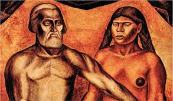
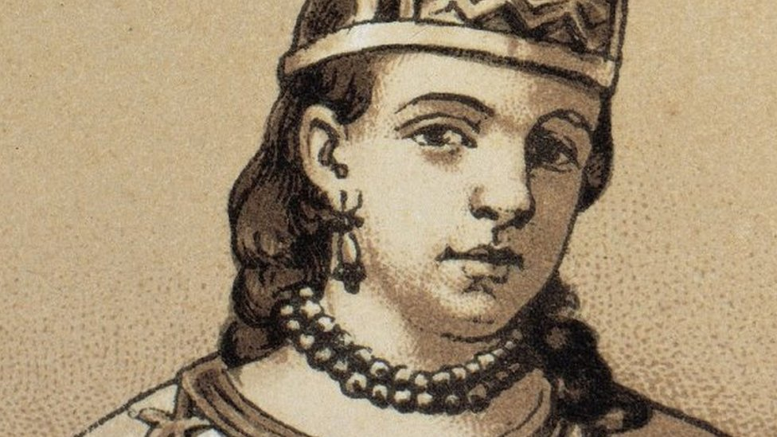

IV Hijos de la Malinche
índice El capítulo de los Hijos de la Malinche del Laberinto de la Soledad de Octavio Paz, trata de cómo el mexicano usa la frase "hijos de la chingada". Cómo esta frase hace referencia al sustantivo femenino del verbo chingar, el cual se refiere a lo pasivo, lo abierto, en comparación al sustantivo masculino, lo chingón, el cual quiere decir lo cerrado, lo fuerte, lo macho y supremo. Hay que ser sinceros, la palabra chingar es como un tesoro para nosotros de cierta forma. Muchos lo sentimos en el pecho y decimos esa grosería como si estuviéramos orgullosos de tenerla en nuestro vocabulario mexicano. Aunque no es sólo ahí donde es usada esta palabra, pues se usa es gran parte de latinoamérica. Eso sí, ahí siempre lo usan de manera negativa y posee una gran variedad de significados. Según Paz este verbo en México:
"[...]denota violencia, salir de sí mismo y penetrar por la fuerza en otro. Y también, herir, rasgar, violar —cuerpos, almas, objetos—, destruir.[...]"
"El verbo chingar indica el triunfo de lo cerrado, del macho, del fuerte, sobre lo abierto[...]"
Como esto nos indica, el autor nos quiere dar a entender que esta palabra esconde la lucha entre la mujer y el hombre, entre lo abierto y lo cerrado, entre lo pasivo y lo agresivo. Un ejemplo claro es el uso de chingada. Hijo o hija de la chingada es una manera de ofender a otra persona refiriéndose a su madre. La frase quiere decir que a ella se la chingaron, o bien, la violaron o sometieron, siendo humillada. Algo chingón es una cosa muy buena. Significa que está padre o si le dicen a alguien que es un chingón, significa que es de lo mejor, que es una persona virtuosa en algún aspecto. Entonces retomando lo de hijos de la Malinche, es algo como un hijos de la chingada, pero sin la grosería. ¿Por qué? Pues bueno, como bien se sabe, Malinche se entregó voluntariamente a Hernán Cortés en La Conquista.
"Ella encarna lo abierto, lo chingado, frente a nuestros indios, estoicos, impasibles y cerrados."
Por eso, en las uĺtimas décadas se ha utilizado y popularizado el término "malinchista" para alguien que tiene el deseo de creerse de algún país extranjero a su país de origen sin antes pertenecer a él:
"Al repudiar a la Malinche —Eva mexicana, se- gún la representa José Clemente Orozco en su mural de la Escuela Nacional Preparatoria— el mexicano rompe sus ligas con el pasado, reniega de su origen y se adentra solo en la vida histórica. [...] El mexicano condena en bloque toda su tradición, que es un conjunto de gestos, actitudes y tendencias en el que ya es difícil distinguir lo español de lo indio."
Igualmente se puede decir que el mexicano es un hijo de la chingada, porque es en gran parte creación del mestizaje entre españoles e indígenas, los cuales fueron sometidos por el ejército de Cortés para que se volvieran al catolicismo y con ello adoptaran la cultura española. A lo que Paz claramente responde:
"Si la Chingada es una representación de la Madre violada, no me parece forzado asociarla a la Conquista, que fue también una violación, no solamente en el sentido histórico, sino en la carne misma de las indias."
Esta palabra hace tiempo dejó de ser solamente una grosería. Ya es un patrimonio mexicano. Esconde dentro de su polisemicidad la historia de México y el pensamiento de sus habitantes. Octavio Paz en este capítulo se adentró como nadie al significado de este verbo y sus conjugaciones. Quién diría que sacaría algo tan profundo de algo que parece tan insignificante.
- ¿Qué simboliza la Malinche para el mexicano?
- Simboliza la humillación por los españoles / La chingada.
- ¿Qué es la chingada?
- Es la que ha sido sometida, suprimida, humillada y/o violada.
- ¿Cuáles son los dos polos del significado del verbo chingar?
- Es o ser humillado o ser un virtuoso y salir ganando.
- ¿Por qué se hace referencia a la chingada en México?
- Porque es una manera de suprimir a los demás y ser el macho.
- ¿Qué significa el término "malinchista"? ¿A quién hace referencia?
- Este término hace referencia a Malinche y se creó para decir que alguien tiene el deseo de creerse de otro país sin pertenecer a él. Es, de alguna manera, una persona que traiciona a su patria.
Malinche
índice Antes, que nada, necesitamos conocer a nuestra protagonista; para entender el escrito de paz, y para darnos cuenta de que de malinchista, ella fue a que menos lo ha sido en esta historia; sino que todo se ha dado a causa del rencor, resentimiento y el complejo de inferioridad de los otros indios y, hoy en día, de los mexicanos en general.
Malinche (conocida también como Malinalli, Malintzin o Doña Marina) era una mujer nahuatl originaria del actual estado mexicano de Veracruz. Malinalli había nacido hacia el año 1500, posiblemente en Oluta cerca de Coatzacoalcos, antigua capital olmeca situada entonces al sureste del Imperio azteca, en la región de la actual Veracruz. En 1519, fue una de las veinte mujeres esclavas dadas como tributo a los españoles por los indígenas de Tabasco, tras la batalla de Centla.1 Jugó un papel importante en la conquista de México Tenochtitlan. Fue intérprete, consejera e intermediaria de Hernán Cortés. Más adelante se convirtió en su compañera y dio a luz a su primer hijo, Martín, quien es considerado uno de los primeros mestizos surgidos de la conquista de México. Más tarde daría a luz con su esposo español Juan Jaramillo a María, su segunda hija.
Malintzin, nació entre 1496 y 15014 en una región que es fronteriza entre los territorios de población nahuatl y el ámbito cultural maya de la región de Tabasco. Fue nombrada "Malinalli" en honor a la diosa de la Hierba, y más tarde “Tenepal” que significa “quien habla con vivacidad”.5 Después de la muerte de su padre, su madre se volvió a casar y tuvo un hijo, lo cual colocaba a Malinalli como una hijastra incómoda del nuevo marido. Debido a ello, acabó siendo vendida a un grupo de traficantes de esclavos proveniente de Xicalango, una importante región comercial al sureste de México. Tras una guerra entre los mayas de Potonchán y los mexicas de la zona de Xicalango, Malinalli fue cedida como tributo a Tabscoob, cacique maya de Tabasco. Todo esto sucedió cuando Malinalli era muy joven, por lo que pronto llegó a hablar con fluidez la lengua maya-yucateca de sus nuevos amos, además de su idioma materno, el náhuatl.
Malinalli fue regalada a Hernán Cortés el 14 de marzo de 1519 junto con otras 19 mujeres, junto con algunas piezas de oro y un juego de mantas.6Tras bautizarla con el nombre de «Marina» Cortés, quien no se sintió atraído a ella, la entregó a Alonso Hernández Portocarrero, uno de los capitanes más reconocidos de la expedición. Sin embargo, poco después Portocarrero regresa a España como emisario de Cortés hacia Carlos V y Cortés se queda a la Malinche por su valor como intérprete entre el idioma maya y el náhuatl. Como complemento, Jerónimo de Aguilar (un náufrago español que había estado cautivo ocho años entre los mayas y que fue rescatado por Cortés en Cozumel) era capaz de realizar la traducción maya-español. Así, con el uso de tres lenguas y dos intérpretes, se llevaron a cabo todos los contactos entre españoles y mexicas, hasta que Malintzin aprendió castellano.
Pero ahí no se detiene todo. Se limita el papel de la Malinche, normalmente, a ser la mujer regalada a Cortés que le hizo de intérprete durante los encuentros con Moctezuma II, y después de la Conquista, que fue violada, torturada por los españoles, convertida y bautizada para pasar los últimos días de su vida casada de un español. Pero no todo es así, el etnólogo Luis Barjau establece muchas afirmaciones correctamente históricas de Mallinali pero muchas veces desestimadas por los historiadores, por lo que se vuelven sorprendentes.
Poco se habla de su labia y su habilidad para negociar y convencer, como lo remarca Barjau, en su libro: “Fue una hábil y desenvuelta negociadora, no sólo tradujo las conversaciones y convenios entre Moctezuma y Hernán Cortés —cuando en 1519 fue regalada a los españoles junto con otras 19 doncellas—, sino que también fue el enlace entre los diálogos previos, durante y posteriores al asedio de Tenochtitlan”
O de su habilidad de liderazgo, y lo imponente que era su persona: “Además, comandó a todos los ejércitos de guerreros indígenas aliados a los castellanos, fue una excelente mujer y gran cacica, señora de vasallos, como lo cita en sus crónicas Bernal Díaz del Castillo” Lo que desmiente el dicho que dice que Doña Marina fue la gran mujer detrás de Cortés, cuando incluso, podríamos decir que Cortés fue el segundo detrás de la Malinche.
Y finalmente, por lo que todos la odiaron y la odian: La ideología de apertura a lo extranjero, el génesis y las mitologías que actualmente se vierten en Malintzin como un puente cultural, y ejemplo de comprensión a la otredad hacen de la Malinche una figura coyuntural y un elemento clave en el entendimiento de la cosmovisión del mexicano. Y que muchos no han podido aclarar ni entender. Por eso les compartimos esta información.
Ahora sí, ya estás listo para saber el anticlimático final de la vida de la Malinche. Tras la caída de Tenochtitlán el 13 de agosto de 1521 y del nacimiento de su hijo Martín Cortés en 1522, Malinalli se quedó en una casa que Cortés le construyó en Coyoacán, muy cerca de la capital mexica. Cortés posteriormente, en Huiloapan de Cuauhtemoc, Veracruz, quien obviamente no amaba a la indígena, casó a Malintzin con un hidalgo, Juan Jaramillo, de quien se sabe que ella tuvo otra hija, María Jaramillo.78 Poco después, Cortés la llevó consigo para calmar una rebelión en Honduras en 1524 – 26, sirviendo ella nuevamente como intérprete.9 Es escasa la información sobre Marina después de que se fue a América Central. No obstante, algunos historiadores estiman que murió alrededor de 1529, enferma por una epidemia de viruela que hubo en 1528 o 1529. Sin embargo, el historiador Sir Hugh Thomas, en su libro Conquest afirma que la fecha probable de su muerte es 1551, deduciéndolo por cartas que descubrió en España, que se refieren a ella como aún viva en 1550.10